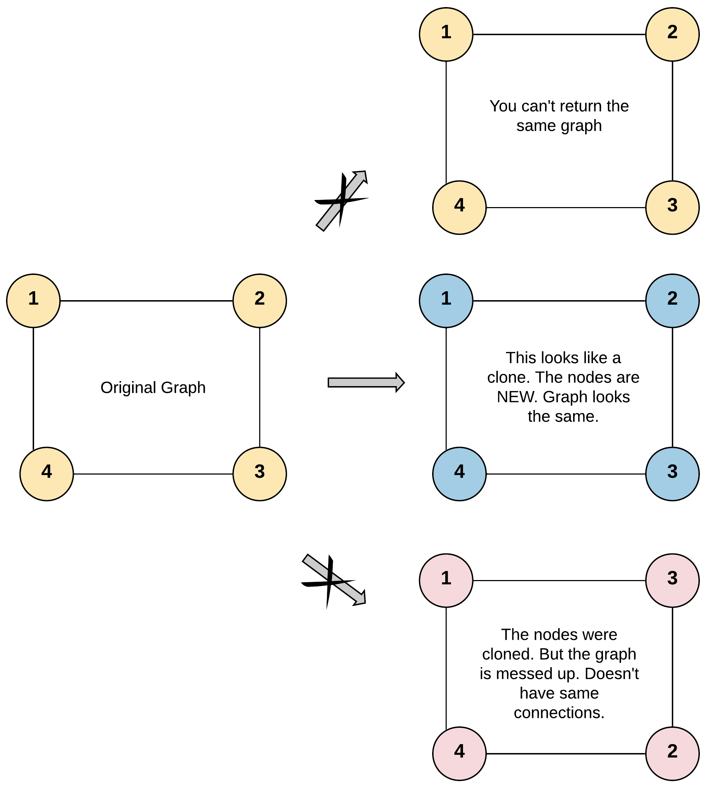
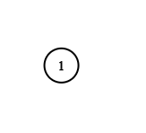
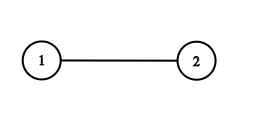

Given a reference of a node in a connected undirected graph.
Return a deep copy (clone) of the graph.
Each node in the graph contains a val (int) and a list (List[Node]) of its neighbors.
class Node {
public int val;
public List<Node> neighbors;
}
Test case format:
For simplicity sake, each node’s value is the same as the node’s index (1-indexed). For example, the first node with val = 1, the second node with val = 2, and so on. The graph is represented in the test case using an adjacency list.
Adjacency list is a collection of unordered lists used to represent a finite graph. Each list describes the set of neighbors of a node in the graph.
The given node will always be the first node with val = 1. You must return the copy of the given node as a reference to the cloned graph.
Example 1:

Input: adjList = [[2,4],[1,3],[2,4],[1,3]] Output: [[2,4],[1,3],[2,4],[1,3]] Explanation: There are 4 nodes in the graph. 1st node (val = 1)'s neighbors are 2nd node (val = 2) and 4th node (val = 4). 2nd node (val = 2)'s neighbors are 1st node (val = 1) and 3rd node (val = 3). 3rd node (val = 3)'s neighbors are 2nd node (val = 2) and 4th node (val = 4). 4th node (val = 4)'s neighbors are 1st node (val = 1) and 3rd node (val = 3).
Example 2:

Input: adjList = [[]] Output: [[]] Explanation: Note that the input contains one empty list. The graph consists of only one node with val = 1 and it does not have any neighbors.
Example 3:
Input: adjList = [] Output: [] Explanation: This an empty graph, it does not have any nodes.
Example 4:

Input: adjList = [[2],[1]] Output: [[2],[1]]
Constraints:
-
1 ⇐ Node.val ⇐ 100 -
Node.valis unique for each node. -
Number of Nodes will not exceed 100.
-
There is no repeated edges and no self-loops in the graph.
-
The Graph is connected and all nodes can be visited starting from the given node.
解题分析
这道题可以使用类似 138. Copy List with Random Pointer 的解法来求解。
1
2
3
4
5
6
7
8
9
10
11
12
13
14
15
16
17
18
19
20
21
22
23
24
25
26
27
28
29
30
31
32
33
34
35
36
37
38
39
40
41
42
43
44
45
46
47
48
49
50
51
52
53
54
55
56
57
58
59
60
61
62
63
64
65
66
67
68
69
70
71
72
73
74
75
76
77
78
79
80
81
82
83
84
85
package com.diguage.algorithm.leetcode;
import java.util.*;
/**
* @author D瓜哥, https://www.diguage.com/
* @since 2020-02-10 00:22
*/
public class _0133_CloneGraph {
// Definition for a Node.
static class Node {
public int val;
public List<Node> neighbors;
public Node() {
val = 0;
neighbors = new ArrayList<Node>();
}
public Node(int _val) {
val = _val;
neighbors = new ArrayList<Node>();
}
public Node(int _val, ArrayList<Node> _neighbors) {
val = _val;
neighbors = _neighbors;
}
}
/**
* Runtime: 28 ms, faster than 34.86% of Java online submissions for Clone Graph.
* Memory Usage: 38.8 MB, less than 5.88% of Java online submissions for Clone Graph.
*/
public Node cloneGraphDfs(Node node) {
Map<Node, Node> dict = new HashMap<>();
return dfs(node, dict);
}
private Node dfs(Node node, Map<Node, Node> dict) {
if (Objects.isNull(node)) {
return null;
}
if (dict.containsKey(node)) {
return dict.get(node);
}
Node clone = new Node(node.val, new ArrayList<>(node.neighbors.size()));
dict.put(node, clone);
for (Node n : node.neighbors) {
clone.neighbors.add(dfs(n, dict));
}
return clone;
}
/**
* Runtime: 26 ms, faster than 47.60% of Java online submissions for Clone Graph.
* Memory Usage: 39.3 MB, less than 5.88% of Java online submissions for Clone Graph.
*/
public Node cloneGraph(Node node) {
if (Objects.isNull(node)) {
return null;
}
Map<Node, Node> dict = new HashMap<>();
dict.put(node, new Node(node.val, new ArrayList<>(node.neighbors.size())));
Deque<Node> deque = new LinkedList<>();
deque.addLast(node);
while (!deque.isEmpty()) {
Node curr = deque.removeFirst();
for (Node n : curr.neighbors) {
if (!dict.containsKey(n)) {
dict.put(n, new Node(n.val, new ArrayList<>(n.neighbors.size())));
deque.addLast(n);
}
dict.get(curr).neighbors.add(dict.get(n));
}
}
return dict.get(node);
}
public static void main(String[] args) {
_0133_CloneGraph solution = new _0133_CloneGraph();
solution.cloneGraph(new Node(1));
}
}